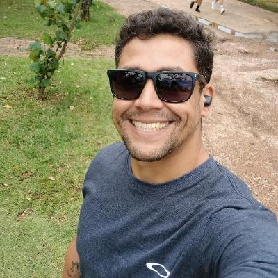

Desenvolvedor
de Software
Sustentação e Integrações
Localizado em Guarulhos - SP - Brasil

Localizado em Guarulhos - SP - Brasil
Profissional de tecnologia com sólida lógica de programação e experiência prática na construção, sustentação e otimização de sistemas web de grande porte. Foco em desenvolvimento FullStack, com forte capacidade para automação de processos e integrações complexas. Vivência em arquiteturas robustas, mensageria e análise de dados corporativos, combinando visão sistêmica e técnica para entregar soluções escaláveis.
Atuo na equipe de sustentação da plataforma SGI (Sistema Geral de Integração), garantindo a estabilidade, resiliência e performance de um sistema de grande porte. Desenvolvimento e manutenção de integrações complexas com múltiplos fornecedores utilizando PHP e NodeJs. Realizo hotfixes e pequenas melhorias, gerenciando o versionamento de forma segura por meio de merge requests.
Trabalhei como Desenvolvedor Fullstack na criação e manutenção de um sistema de CRM, responsável pelo desenvolvimento de interfaces, controllers e repositórios. Contato direto com o cliente para o levantamento de requisitos funcionais e aplicação de regra de negócio. Desenvolvimento de um sistema omnichannel complexo, integrando um backend em Node.js com a API do WhatsApp e frontend construído com C#, ASP.NET e JavaScript. Criação de um construtor de fluxos para chatbot de WhatsApp, permitindo que os usuários customizassem dinamicamente as etapas de atendimento de seus clientes. Desenvolvimento de um widget de chat em ReactJS de alta personalização, projetado para ser integrado de forma simples e rápida em sites de terceiros através de uma única tag de script. Criação e manutenção de contêineres Docker para padronização de ambientes e otimização das esteiras de desenvolvimento.
Atuação direta na estruturação e extração de dados do Data Lake corporativo, desenvolvendo queries (SQL) para consumo em ferramentas de Business Intelligence (BI). Criação e manutenção de relatórios e dashboards executivos (Qlikview e Power BI) para acompanhamento de indicadores cruciais, como receita, despesas, budget e previsão de faturamento (forecast). Automação de processos operacionais e geração de relatórios personalizados em Excel através da criação de scripts em VBA. Otimização e refatoração de rotinas de carga de dados do BI, alcançando uma redução de 75% no tempo de processamento (de 2 horas para 30 minutos).
Bacharelado em Ciência da computação. Recentemente realizei cursos intensisos do ecosistema Javascript. 🎓